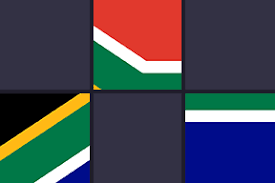
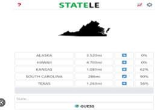
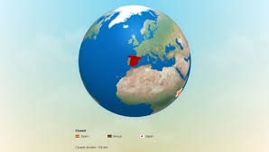

Flagle
Pretty much, flagle is where you guess a random country and it gives away part of the flag. Your goal is to guess the flag before it gets fully uncovered.
Play!You should see a screen that shows an outline of a country, a textbox that is used to guess, a guess button, and boxes that will show your past guesses. To start playing you should look at the outline and guess a country. Let's say you guess Mali. It will show the name of the country you guessed, how far away your guess is from the actuall country, an arrow pointing in which direction the country is, and the percentage of how close you where(If you where very close it should be a high percentage). After that you now have clues to use up your 5 guesses that you have left. Good Luck!
Play
There are many flags (around 254) but here are a few of them that you might be familiar with:
Which one would you want to try?

Pretty much, flagle is where you guess a random country and it gives away part of the flag. Your goal is to guess the flag before it gets fully uncovered.
Play!
Statele is litteraly like worldle, but you have to guess a state.
Play!
You guess a random country and it tells you if it's warm/ warmer/ cold/ colder. It also gives you a globe so that you can see where the country you could guess could be.
Play!